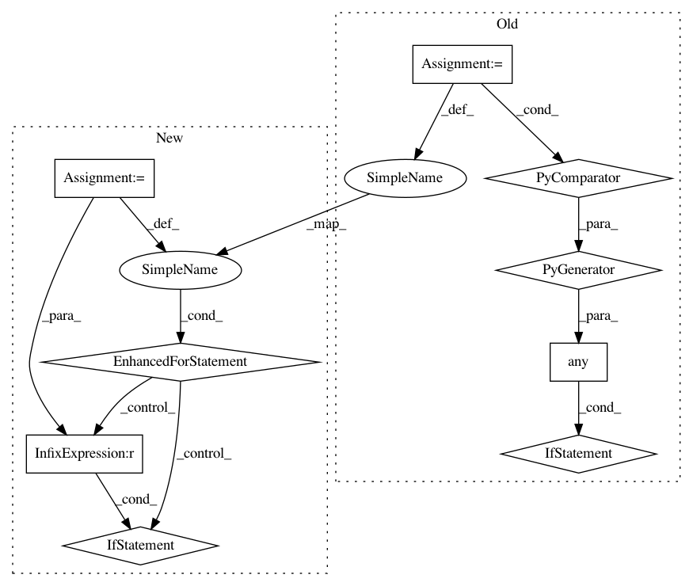

6c0f4c35f6e6ea8c2993c6582f2f983bc9c4c5ad,homeassistant/components/sensor/systemmonitor.py,SystemMonitorSensor,update,#SystemMonitorSensor#,115
Before Change
elif self.type == "processor_use":
self._state = round(psutil.cpu_percent(interval=None))
elif self.type == "process":
if any(self.argument in l.name() for l in psutil.process_iter()):
self._state = STATE_ON
else:
self._state = STATE_OFF
elif self.type == "network_out" or self.type == "network_in":
counters = psutil.net_io_counters(pernic=True)
if self.argument in counters:
counter = counters[self.argument][IO_COUNTER[self.type]]
After Change
elif self.type == "processor_use":
self._state = round(psutil.cpu_percent(interval=None))
elif self.type == "process":
for proc in psutil.process_iter():
try:
if self.argument == proc.name():
self._state = STATE_ON
return
except psutil.NoSuchProcess as err:
_LOGGER.warning(
"Failed to load process with id: %s, old name: %s",
err.pid, err.name)
self._state = STATE_OFF
elif self.type == "network_out" or self.type == "network_in":
counters = psutil.net_io_counters(pernic=True)
if self.argument in counters:
In pattern: SUPERPATTERN
Frequency: 3
Non-data size: 9
Instances
Project Name: home-assistant/home-assistant
Commit Name: 6c0f4c35f6e6ea8c2993c6582f2f983bc9c4c5ad
Time: 2017-09-23
Author: tommatheussen5@hotmail.com
File Name: homeassistant/components/sensor/systemmonitor.py
Class Name: SystemMonitorSensor
Method Name: update
Project Name: dgasmith/opt_einsum
Commit Name: 802a991087c8ba2620e2f98aa709af8f530f8b93
Time: 2018-03-22
Author: john.gray.14@ucl.ac.uk
File Name: opt_einsum/blas.py
Class Name:
Method Name: can_blas
Project Name: reinforceio/tensorforce
Commit Name: 7deceb39597ea90e0f130448cf3616f0875b7f91
Time: 2017-10-28
Author: aok25@cl.cam.ac.uk
File Name: tensorforce/models/q_naf_model.py
Class Name: QNAFModel
Method Name: tf_regularization_losses